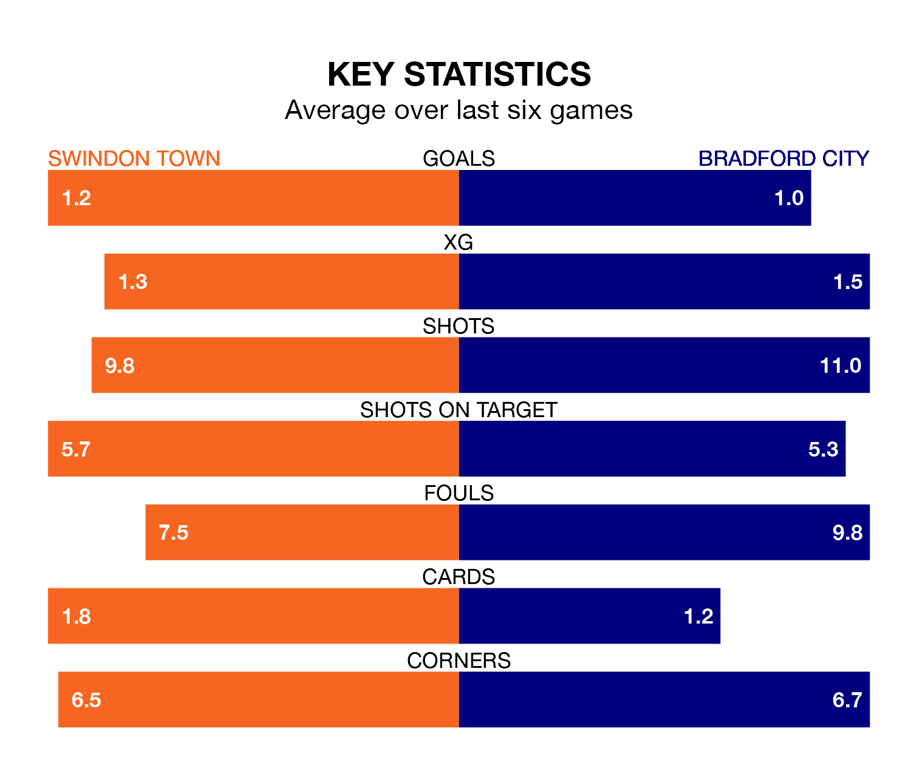

Bradford City travel to the County Ground looking to secure a first win in seven EFL League Two games against Swindon Town on Saturday.
The Bantams have lost two and drawn four matches since they last earned three points – against Doncaster Rovers on December 22.
They face a Swindon side who have won just one and drawn one over that time.
With 50 goals in 28 games so far this season, Swindon are scoring more than average in the league with 1.8 goals per game. But they are conceding more than average too, letting in 54 goals at a rate of 1.9 per game.
Bradford, meanwhile, are below average scorers, with 1.2 goals per game, compared to a league average of 1.5. They have conceded 1.3 goals per game.
In Jake Young, Town have one of the league's most on-form strikers so far this season. He has notched 16 goals in 25 appearances, to sit second in the scoring charts.
His goal rate of one every 123 minutes is quicker than that of Andy Cook, City's top scorer with a goal every 199 minutes, and a total of 11 goals in 25 games.
In the last 10 years, Swindon and Bradford have played each other on 14 occasions. Swindon won seven of them, Bradford five, and they drew twice.
On average, the Robins scored 1.3 goals and the Bantams 1.1 in those matches.
Their last meeting was on October 7, when Bradford won 1-0 at home.
The Robins are 17th in the table after 28 games, of which they have won nine and drawn seven, earning 34 points.
The Bantams are one place ahead of the home side in 16th, with nine wins and nine draws putting them on 36 points.
Swindon's last match was on January 13, a 2-1 loss against Crewe Alexandra, with Charlie Austin getting the goal for the Robins.
Bradford drew 1-1 with Salford City last time out, on Tuesday, with Brad Halliday on the scoresheet.
Saturday's match will be refereed by Geoff Eltringham, who is taking charge of his first EFL League Two game this season.
He is yet to oversee a match featuring either Swindon or Bradford this season.
Updated: 09:07 (UTC), 24/01/24